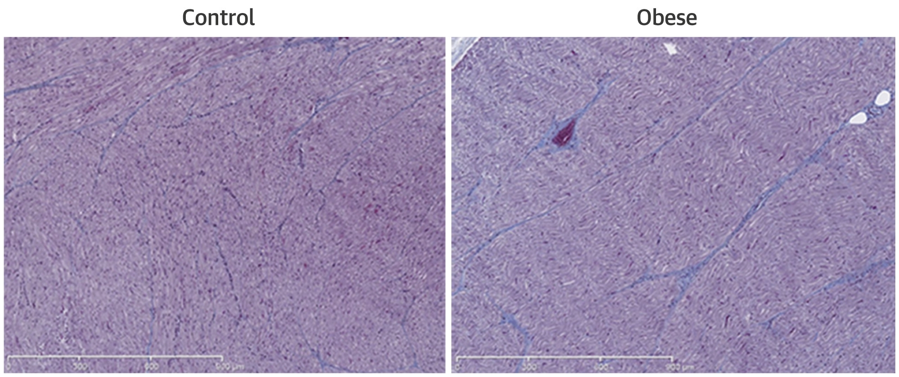

AF progresses...
even without AF.
The role of
'Second Factor'. AF progresses even without AF.
The role of 'Second Factor'.
even without AF.
The role of
'Second Factor'. AF progresses even without AF.
The role of 'Second Factor'.
Characters of the Second Factors
 Atrial Fibrosis
Atrial Fibrosis
Atrial conduction delay and atrial voltage reduction
Atria Remodelling as Consequences of Sustained Obesity (1/2)
|
20 sheeps |
→
Induced obesity over 36wks |
Maintained obesity over another 36wks. Mean weight 110kgs. |
|
| →
Maintained normal weight. |
 |
Mean weight 60 kgs. |
Atria Remodelling as Consequences of Sustained Obesity (2/2)
More fibrosis in obesed sheeps than that of control (8% vs 5%).

Obesity and
the substrate for AF.
the substrate for AF.